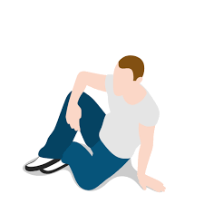

Judging by the frigid temperatures lately, it’s probably been a struggle to get outside and do just about anything, let alone squeezing in some exercise outdoors. But you may want to consider bundling up for your workout as venturing into the cold for exercise might be the difference in burning more fat compared to others this winter. The hard-fought routines you may have created in the warmer months during the coronavirus pandemic may have shifted indoors, back to the Zoom yoga classes or a Peloton bike for those fortunate enough to not be on a waiting list. Since temperatures dropped, there’s been noticeably less traffic around the park loop compared to the summer months. The diehard runners remain, decked out in their cold-weather gear and reflective vests as the days became shorter and darkness arrived earlier. A new study by researchers in Canada found that high-intensity interval training (HIIT) can burn more fat when it’s conducted outside in colder weather compared to indoor routines of the same magnitude. The study, published in the Journal of Applied Physiology, found that temperate plays a part in increasing metabolism speed, which is where colder weather comes into the equation. HIIT has been proven as an exercise method that burns fat more efficiently than moderate-intensity workouts. HIIT exercises focus on shorter periods of more intense exercise with balanced rest in between. It can come in a combination of aerobic or resistance workouts that tend to make participants feel the burn immediately rather than a steady workout. In addition, HIIT can be interchangeable, meaning that there is no strict way to conduct a workout from start to finish. It can be for anyone and can easily be adjusted to personal liking. HIIT exercises typically range from 30 minutes to up to an hour, but other forms can be for as little as 20 minutes. The key here is to maintain a steady heart rate that is about 80-90% of a person’s maximum heart rate. In this study, researchers had a group of “moderately fit, overweight” adults partake in two high-intensity exercise sessions that were spaced out by a week. The sessions were comprised of 10 one-minute cycling jolts that aimed for 90% effort before a 90-second recovery period of cycling at 30% effort after each individual sprint. Here, researchers controlled the temperature: one exercise was set at 70 degrees; the other kept a room temperature of 32 degrees. After measuring body temperatures, heart rate, oxygen and other pieces of data, participants were put on a diet that comprised of a high-fat breakfast, where their blood samples. Following the conclusion of the study, researchers said they found that temperature played a role in lipid oxidation, which is essentially burning fat. “The present study found that high-intensity exercise in the cold increased lipid oxidation by 358% during the exercise bout in comparison to high-intensity exercise in a thermoneutral environment,” the research team wrote. However, longer term metabolic responses after eating the high-fat meal—including blood sugar regulation, fat burning and triglyceride levels—did not change substantially after the cold condition,” researchers said. Judging by the frigid temperatures lately, it’s probably been a struggle to get outside and do just about anything, let alone squeezing in some exercise outdoors. But you may want to consider bundling up for your workout as venturing into the cold for exercise might be the difference in burning more fat compared to others this winter. The hard-fought routines you may have created in the warmer months during the coronavirus pandemic may have shifted indoors, back to the Zoom yoga classes or a Peloton bike for those fortunate enough to not be on a waiting list. Since temperatures dropped, there’s been noticeably less traffic around the park loop compared to the summer months. The diehard runners remain, decked out in their cold-weather gear and reflective vests as the days became shorter and darkness arrived earlier. A new study by researchers in Canada found that high-intensity interval training (HIIT) can burn more fat when it’s conducted outside in colder weather compared to indoor routines of the same magnitude. The study, published in the Journal of Applied Physiology, found that temperate plays a part in increasing metabolism speed, which is where colder weather comes into the equation. HIIT has been proven as an exercise method that burns fat more efficiently than moderate-intensity workouts. HIIT exercises focus on shorter periods of more intense exercise with balanced rest in between. It can come in a combination of aerobic or resistance workouts that tend to make participants feel the burn immediately rather than a steady workout. In addition, HIIT can be interchangeable, meaning that there is no strict way to conduct a workout from start to finish. It can be for anyone and can easily be adjusted to personal liking. HIIT exercises typically range from 30 minutes to up to an hour, but other forms can be for as little as 20 minutes. The key here is to maintain a steady heart rate that is about 80-90% of a person’s maximum heart rate. In this study, researchers had a group of “moderately fit, overweight” adults partake in two high-intensity exercise sessions that were spaced out by a week. The sessions were comprised of 10 one-minute cycling jolts that aimed for 90% effort before a 90-second recovery period of cycling at 30% effort after each individual sprint. Here, researchers controlled the temperature: one exercise was set at 70 degrees; the other kept a room temperature of 32 degrees. After measuring body temperatures, heart rate, oxygen and other pieces of data, participants were put on a diet that comprised of a high-fat breakfast, where their blood samples. Following the conclusion of the study, researchers said they found that temperature played a role in lipid oxidation, which is essentially burning fat. “The present study found that high-intensity exercise in the cold increased lipid oxidation by 358% during the exercise bout in comparison to high-intensity exercise in a thermoneutral environment,” the research team wrote. However, longer term metabolic responses after eating the high-fat meal—including blood sugar regulation, fat burning and triglyceride levels—did not change substantially after the cold condition,” researchers said. Judging by the frigid temperatures lately, it’s probably been a struggle to get outside and do just about anything, let alone squeezing in some exercise outdoors. But you may want to consider bundling up for your workout as venturing into the cold for exercise might be the difference in burning more fat compared to others this winter. The hard-fought routines you may have created in the warmer months during the coronavirus pandemic may have shifted indoors, back to the Zoom yoga classes or a Peloton bike for those fortunate enough to not be on a waiting list. Since temperatures dropped, there’s been noticeably less traffic around the park loop compared to the summer months. The diehard runners remain, decked out in their cold-weather gear and reflective vests as the days became shorter and darkness arrived earlier. A new study by researchers in Canada found that high-intensity interval training (HIIT) can burn more fat when it’s conducted outside in colder weather compared to indoor routines of the same magnitude. The study, published in the Journal of Applied Physiology, found that temperate plays a part in increasing metabolism speed, which is where colder weather comes into the equation. HIIT has been proven as an exercise method that burns fat more efficiently than moderate-intensity workouts. HIIT exercises focus on shorter periods of more intense exercise with balanced rest in between. It can come in a combination of aerobic or resistance workouts that tend to make participants feel the burn immediately rather than a steady workout. In addition, HIIT can be interchangeable, meaning that there is no strict way to conduct a workout from start to finish. It can be for anyone and can easily be adjusted to personal liking. HIIT exercises typically range from 30 minutes to up to an hour, but other forms can be for as little as 20 minutes. The key here is to maintain a steady heart rate that is about 80-90% of a person’s maximum heart rate. In this study, researchers had a group of “moderately fit, overweight” adults partake in two high-intensity exercise sessions that were spaced out by a week. The sessions were comprised of 10 one-minute cycling jolts that aimed for 90% effort before a 90-second recovery period of cycling at 30% effort after each individual sprint. Here, researchers controlled the temperature: one exercise was set at 70 degrees; the other kept a room temperature of 32 degrees. After measuring body temperatures, heart rate, oxygen and other pieces of data, participants were put on a diet that comprised of a high-fat breakfast, where their blood samples. Following the conclusion of the study, researchers said they found that temperature played a role in lipid oxidation, which is essentially burning fat. “The present study found that high-intensity exercise in the cold increased lipid oxidation by 358% during the exercise bout in comparison to high-intensity exercise in a thermoneutral environment,” the research team wrote. However, longer term metabolic responses after eating the high-fat meal—including blood sugar regulation, fat burning and triglyceride levels—did not change substantially after the cold condition,” researchers said. Judging by the frigid temperatures lately, it’s probably been a struggle to get outside and do just about anything, let alone squeezing in some exercise outdoors. But you may want to consider bundling up for your workout as venturing into the cold for exercise might be the difference in burning more fat compared to others this winter. The hard-fought routines you may have created in the warmer months during the coronavirus pandemic may have shifted indoors, back to the Zoom yoga classes or a Peloton bike for those fortunate enough to not be on a waiting list. Since temperatures dropped, there’s been noticeably less traffic around the park loop compared to the summer months. The diehard runners remain, decked out in their cold-weather gear and reflective vests as the days became shorter and darkness arrived earlier. A new study by researchers in Canada found that high-intensity interval training (HIIT) can burn more fat when it’s conducted outside in colder weather compared to indoor routines of the same magnitude. The study, published in the Journal of Applied Physiology, found that temperate plays a part in increasing metabolism speed, which is where colder weather comes into the equation. HIIT has been proven as an exercise method that burns fat more efficiently than moderate-intensity workouts. HIIT exercises focus on shorter periods of more intense exercise with balanced rest in between. It can come in a combination of aerobic or resistance workouts that tend to make participants feel the burn immediately rather than a steady workout. In addition, HIIT can be interchangeable, meaning that there is no strict way to conduct a workout from start to finish. It can be for anyone and can easily be adjusted to personal liking. HIIT exercises typically range from 30 minutes to up to an hour, but other forms can be for as little as 20 minutes. The key here is to maintain a steady heart rate that is about 80-90% of a person’s maximum heart rate. In this study, researchers had a group of “moderately fit, overweight” adults partake in two high-intensity exercise sessions that were spaced out by a week. The sessions were comprised of 10 one-minute cycling jolts that aimed for 90% effort before a 90-second recovery period of cycling at 30% effort after each individual sprint. Here, researchers controlled the temperature: one exercise was set at 70 degrees; the other kept a room temperature of 32 degrees. After measuring body temperatures, heart rate, oxygen and other pieces of data, participants were put on a diet that comprised of a high-fat breakfast, where their blood samples. Following the conclusion of the study, researchers said they found that temperature played a role in lipid oxidation, which is essentially burning fat. “The present study found that high-intensity exercise in the cold increased lipid oxidation by 358% during the exercise bout in comparison to high-intensity exercise in a thermoneutral environment,” the research team wrote. However, longer term metabolic responses after eating the high-fat meal—including blood sugar regulation, fat burning and triglyceride levels—did not change substantially after the cold condition,” researchers said.
 click to go to top